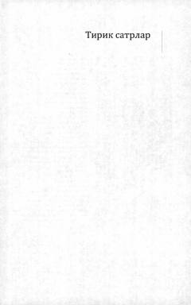

AOShavkat Rahmonning chuqur falsafiy va lirik she'rlari jamlangan to'plam.
Ushbu to'plam XX asr o'zbek she'riyatining yirik vakili Shavkat Rahmonning saralangan she'rlarini o'z ichiga oladi. Kitob shoirning inson ruhiyati, milliy tuyg'ular va hayot falsafasi haqidagi chuqur mushohadalarini aks ettiradi.